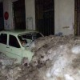

Care e noul blog al lui Zoso? Ce site va lansa Vali Petcu? S-a retras Zoso definitiv din online sau lansează un nou proiect? Ce s-a întâmplat cu zoso.ro, cel mai citit blog din România? Sunt întrebări care au invadat o parte a spaţiului virtual după ce liderul de trafic al blogosferei româneşti a făcut [...]

Tot la câteva zile, presa românească mai capătă câte o proaspătă obsesie. Dacă au ieşit nişte oameni în stradă, trei zile şi trei nopţi nu se discută decât despre protestatari, lozincile, revendicările, scandările, feţele şi scufiile lor. Când dă prima zăpadă, jurnaliştii lasă baltă manifestaţiile, îndreptându-şi atenţia către previziunile meteorologilor, nămeţii de pe şosele, frigul [...]

Dacă televiziunile spun adevărul atunci când susţin că livrează pe post ce le cere publicul, înseamnă că românii adoră panica. Telespectatorii autohtoni îngurgitează cu nesaţ ore întregi de programe despre ţara îngropată sub nămeţi, coşmarul alb sau victimele iernii. Simt cum le creşte adrenalina de fiecare dată când meteorologii anunţă vreun cod colorat şi se [...]
“Vai, ce păcat că încă n-a nins în iarna asta”, rosteşte teatral pipiţa fandosită. “Da, n-am simţit că a venit iarna, nu s-a aşternut zăpada”, o aprobă empatic junele imberb. Schimbul de replici are loc an de an, începând cam de pe la începutul lui decembrie. Mai uşor înţeleg pasiunea unora pentru sexul cu capre, [...]

Camerele video în holul blocului și în alte spații comune sunt ultima găselniță a locatarilor cu veleități de securist, care, spre amurgul vieții, ajung să conducă ceva: asociația de proprietari. Sistemele de supraveghere și înregistrare video instalate în acest mod sunt adesea nu doar ilegale, ci și absolut inutile. De multe ori, printr-un efect pervers, [...]

Ziua 1 Artistul X a murit. Nu contează că e vorba despre un bătrân actor intrat în negura uitării, despre vreo cântăreaţă de mâna a doua care s-a sinucis sau despre un regizor anonim, în clipa decesului omul devine automat mare, celebru şi îndrăgit. Iar dacă-i mare, atunci e rost de Breaking News. Televiziunile de ştiri [...]

Nu poţi să vinzi tampoane O.B. punând pe ambalaj o poză cu Maica Tereza, n-ai cum să faci o reclamă la Bonibon avându-l ca personaj pe Ivan cel Groaznic, iar dacă scoţi pe piaţă un ursuleţ de pluş roz, ar fi bine nu-l cheme Kurt Treptow. Dacă firma ta se numeşte Dristor Kebab, parcă n-ai [...]
6777 de dolari pe lună, adică 81.327 USD pe an, câştigă în medie un american care lucrează în domeniul IT. Profesioniştii din domeniul tehnologiei informaţiei s-au bucurat de cea mai mare creştere salarială anuală din 2008 până în prezent, conform studiului privind nivelul veniturilor în 2011, realizat de Dice, un site de recrutare dedicat celor [...]

În vremurile noastre, dacă vrei să jigneşti o domnişoară, nu te mai legi nici de inteligenţa ei, nici de moravuri, nici de ţignalul cu care îşi anunţă toţi vecinii că are o dezbatere în contradictoriu cu partenerul, pe tema consumului de alcool în locuri publice. Pentru femeia modernă şi contemporană, neaoşa trimitere la origini nu [...]
O vorbă din popor zice că „pic cu pic se face lacul”. „Bine, dar să înceapă altul”, ar completa locuitorii României contemporane. Toţi se plâng de corupţie, dar încă n-am auzit de vreun medic, profesor sau funcţionar care să refuze ferm o mică atenţie. Toţi critică mizeria de pe trotuare, dar prea puţini folosesc scrumiera [...]
10 ianuarie 2012 e data demisiei doctorului Raed Arafat din funcţia de Subsecretar de Stat. Au urmat 15 zile de proteste, din care vreo două la obiect, iar restul anti-guvernamentale, cu accente anti-statale. Iată cum a evoluat bursa de la Bucureşti în toată această perioadă: Deşi pare paradoxală, evoluţia pieţei de acţiuni are o explicaţie [...]

Schimbarea clasei politice în totalitate e una dintre cele mai amuzante, radicale şi utopice revendicări din ultimele zile. Să plece toţi politicienii şi să nu vină nimeni în loc, să conducă poporul. Sau să vină, citez, „alţii mai buni”. Mai competenţi, mai drepţi, mai tandri, mai deschişi, mai frumoşi, mai inteligenţi, mai curaţi decât „ăştia [...]